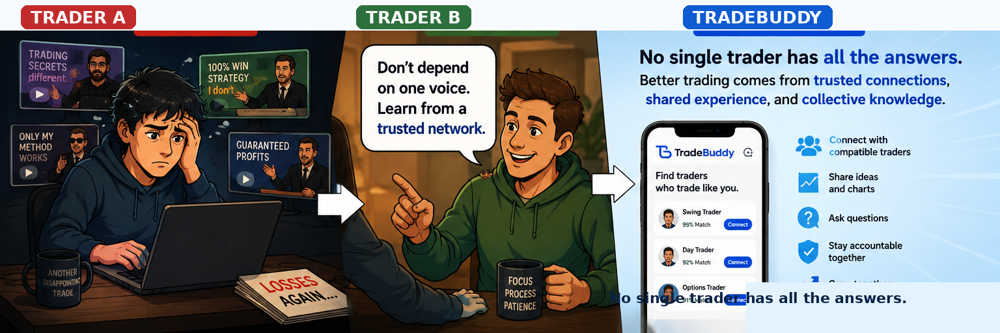

Create your trading profile
Tell TradeBuddy how you trade—your markets, style, timeframes, approach, and more.
Trading can be lonely. TradeBuddy helps you discover traders who share your markets, trading style, timeframe, and approach—so you can learn together, stay accountable, and build a trusted trading network.
India-first launch. Global access planned.

Tell TradeBuddy how you trade—your markets, style, timeframes, approach, and more.
See traders whose preferences align with yours, along with a simple compatibility indicator.
Build your network, message privately, and share chart images with your trading partners.
TradeBuddy gives members straightforward tools to communicate privately, report content, permanently disconnect from another trader, and delete their account.
No. TradeBuddy is a social networking platform that helps traders discover compatible trading partners, connect, message, share chart images, and build trusted trading relationships. TradeBuddy does not provide brokerage services, investment advice, trading signals, copy trading, or financial recommendations.
TradeBuddy uses the profile information and trading preferences you choose to provide to recommend potentially relevant traders. Recommendations do not guarantee compatibility or results.
A Free Membership is available. Premium features may include unlimited new conversations and Nearby Traders.
Yes. You can permanently delete your account from Settings or use the public account-deletion page if you cannot access the app.
Many traders move between courses, gurus, communities, and social media searching for answers—yet still feel alone because everyone trades differently.
TradeBuddy helps traders connect with people who genuinely trade like they do, so they can exchange ideas, ask questions, stay accountable, and learn together.
No single trader has all the answers. Better trading comes from trusted connections, shared experience, and collective knowledge.
